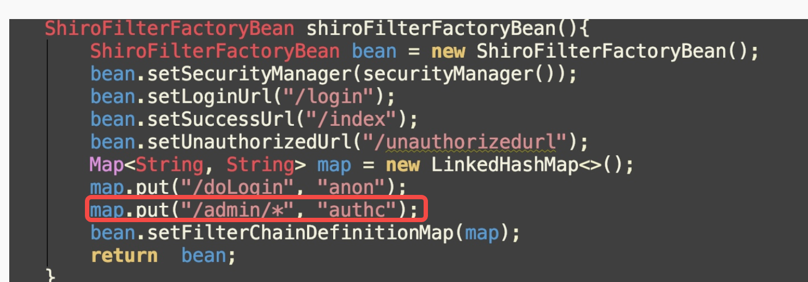
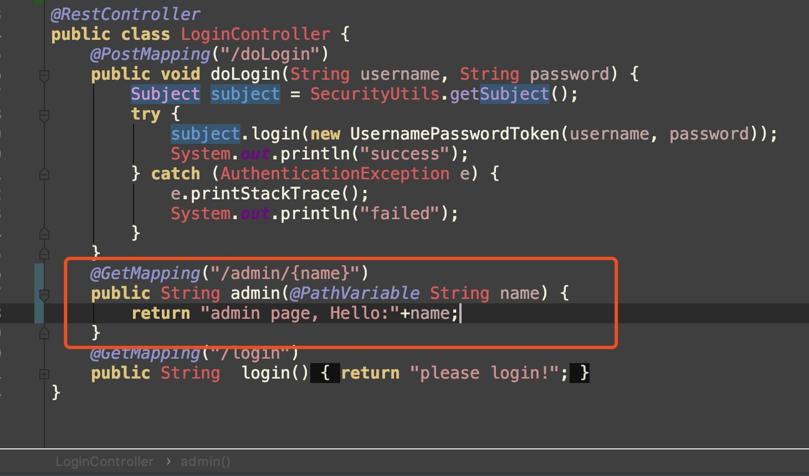

shiro
目录
爆key拿shell
不用说了，基操了
权限绕过
在shiro权限绕过漏洞中，利用的问题是shiro拦截器先于spring boot执行，并且二者的匹配模式不同，最终导致访问的url1和shiro处理的url2以及spring路由的url3不同，导致shiro拦截器起不到应有的作用从而被绕过。
shiro框架通过拦截器来实现对用户访问权限的控制和拦截。Shiro常见的拦截器有anon,authc等。 ｜ anon：匿名拦截器，不需登录就能访问，一般用于静态资源，或者移动端接口。如登陆，忘记密码，js等 authc：登录拦截器，需要登录认证才能访问的资源。我们通过在配置文件中配置需要登录才可访问的url，实现对url的访问控制。 其中，url的路径表达式为Ant格式。?：匹配一个字符 *：匹配零个或多个字符串 **：匹配路径中的零个或多个路径
CVE-2016-6802
利用条件 shrio<1.3.2 利用方法 在访问路径前加上/任意目录名/../，即可绕过访问
不能访问：
http://127.0.0.1:8080/samples-web-1.2.4/account/index.jsp
bypass：
http://127.0.0.1:8080/aaa/../samples-web-1.2.4/account/index.jsp
CVE-2020-1957
利用条件 Apache Shiro <= 1.5.1 ， Spring 框架中只使用 Shiro 鉴权
利用方法 /demo/..;/admin/index （其中demo为授权路径，admin/index为鉴权路径）
CVE-2020-11989
利用条件： Apache Shiro <= 1.5.2 需要后端特定的格式才可进行触发， 即：Shiro权限配置必须为 /xxx/*

后端逻辑必须是/xxx/{variable}且variable的类型必须是String（如@Requestmapping=/admin/{name})

利用方法：admin/page%252fABCDEFG，其中admin/page为鉴权路径，ABCDEFG为随意字符串
CVE-2020-13933
实质上是对11989的绕过
利用条件 Apache Shiro < 1.6.0 Spring 框架中只使用 Shiro 鉴权 需要后端特定的格式才可进行触发即：Shiro权限配置必须为 /xxxx/* 同时后端逻辑必须是 /xxx/{variable} 且 variable 的类型必须是 String
利用方法：/srpingboot_shiro_war/admin/%3bABCDEFG
CVE-2020-17510
也是bypass
Shiro < 1.7.0 Spring 框架中只使用 Shiro 鉴权 需要后端特定的格式才可进行触发即：Shiro权限配置必须为 /xxxx/* 同时后端逻辑必须是 /xxx/{variable} 且 variable 的类型必须是 String
利用方法 /admin/%2e
以下paylaod都可用
/%2e
/%2e/
/%2e%2e
/%2e%2e/
CVE-2020-17523
也可以是把它看作CVE-2020-13933的绕过
利用条件 Apache Shiro < 1.7.1 Spring 框架中只使用 Shiro 鉴权 需要后端特定的格式才可进行触发即：Shiro权限配置必须为 /xxxx/* 同时后端逻辑必须是 /xxx/{variable} 且 variable 的类型必须是 String
利用方法 /srpingboot_shiro_war/admin/%20